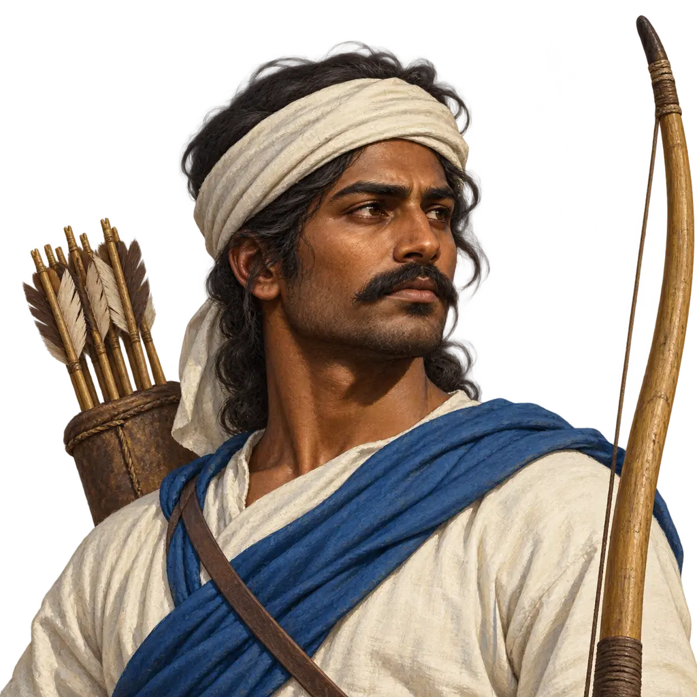
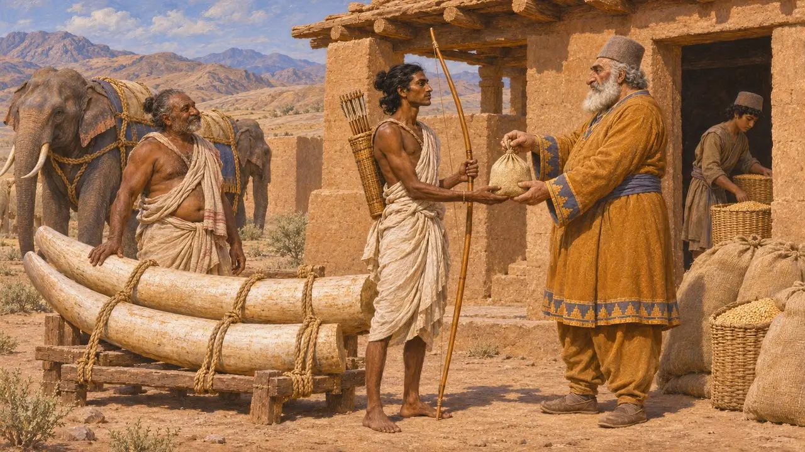
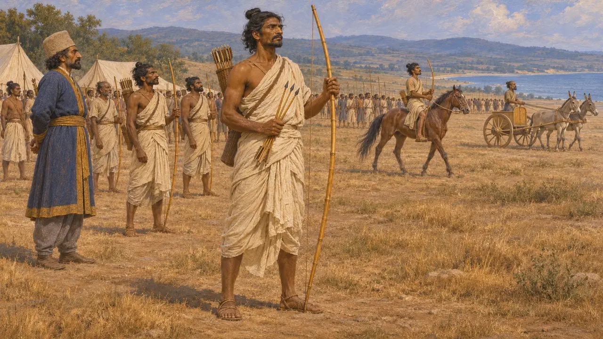
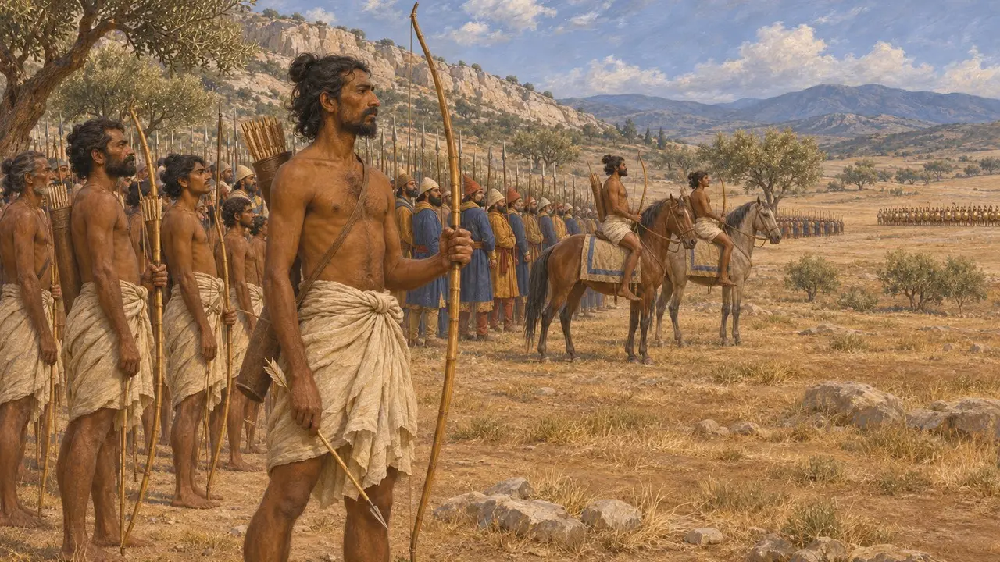
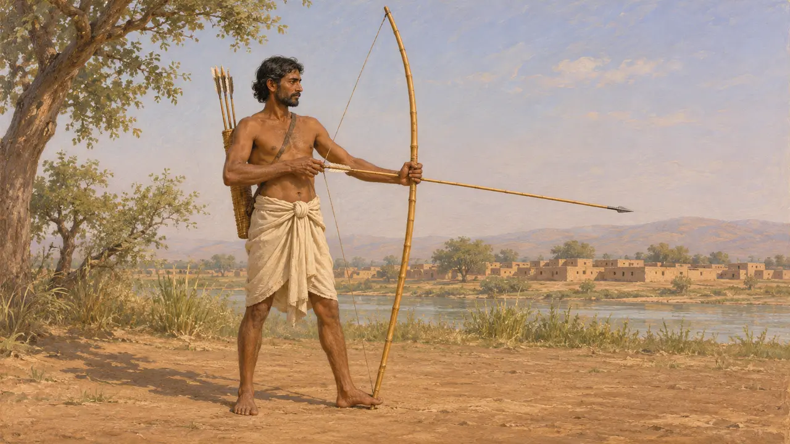
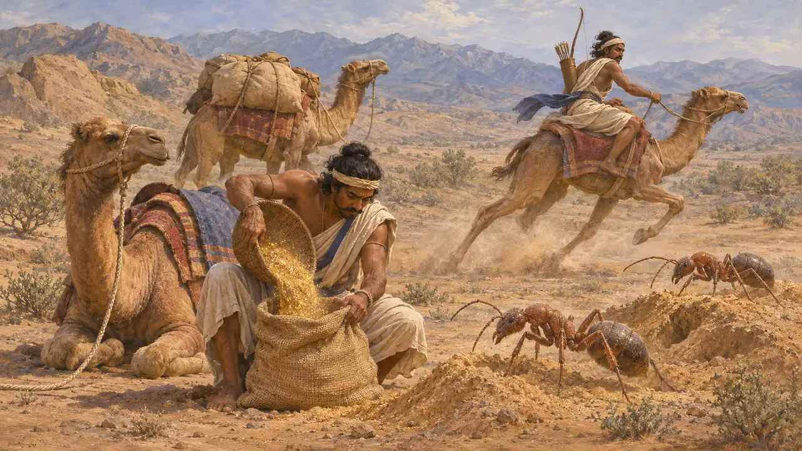

Enciclopédia › Soldados e navios

Arqueiro Indiano
Flecheiro da província aquemênida de Hindush, no vale do Indo, c. 515-479 AEC
No jogo: Nível 11: O Final
Os arqueiros indianos vinham de Hindush, a província do vale do Indo que Dario provavelmente acrescentou ao império alguns anos depois de 520 AEC. Heródoto os descreve marchando com Xerxes em roupas de algodão, com arcos de cana e flechas de cana com ponta de ferro, e diz que Mardônio os manteve para a campanha final na Grécia, em 479 AEC. Eles mostram até onde o Rei podia recrutar soldados, do Indo à Beócia.
No jogo: O jogo tira de Heródoto o algodão, o arco de cana e as flechas de cana com ponta de ferro. O longo alcance, a cadência de tiro lenta e a fragilidade são escolhas do jogo: nenhuma fonte antiga mede o alcance ou a rapidez dos arqueiros indianos.

Hindush nas listas do Rei
Nos registrosHindush não aparece na lista de terras da inscrição de Behistun, portanto provavelmente foi conquistada depois de cerca de 519 AEC. Ela é citada em listas posteriores de Dario, incluindo a inscrição de seu túmulo em Naqsh-e Rostam, onde uma figura indiana ajuda a carregar o trono do Rei. A carta de Dario em Susa diz que o marfim foi trazido da Índia, entre outras terras, e as tabuinhas da Fortificação de Persépolis registram viajantes que iam e vinham de Hindush recebendo rações.
DB §6; DNa; DSf; Persepolis Fortification tablets

A convocação de Dorisco segundo Heródoto
Relato antigoHeródoto inclui os indianos entre a infantaria de Xerxes em 480 AEC, vestidos com roupas feitas de lã de árvore, ou seja, algodão, e armados com arcos e flechas de cana com pontas de ferro. Dá como seu comandante Farnazatres, filho de Artabates. Acrescenta que os cavaleiros indianos vinham armados do mesmo modo, com cavalos de montaria e carros puxados por cavalos e asnos selvagens. Seu total para o exército inteiro, mais de 1,7 milhão de infantes, é considerado pelos historiadores muito exagerado.
Herodotus 7.60; Herodotus 7.65; Herodotus 7.86

Reservados para a última campanha
Relato antigoDepois de Salamina, diz Heródoto, Mardônio escolheu as tropas que queria manter consigo na Grécia, e os indianos estavam entre elas, a pé e a cavalo, ao lado de persas, medos, sakas e bactrianos. Em Plateia, em 479 AEC, ele os posiciona na linha de batalha diante de parte do exército grego. Não registra nenhum feito particular deles no combate.
Herodotus 8.113; Herodotus 9.31

Qual era o comprimento do arco indiano
DisputadoArriano, apoiando-se em autores que foram ao Oriente com Alexandre, descreve arqueiros indianos a pé com um arco da altura de um homem, apoiado no chão, e flechas muito longas. Os historiadores debatem se esse retrato do século IV se aplica às tropas do Indo da época de Xerxes, e se a "cana" de Heródoto significa junco ou bambu. Nenhuma das fontes indica alcance, de modo que as afirmações de que os arcos indianos superavam em alcance os persas se baseiam em inferência.
Arrian, Indica 16; Herodotus 7.65

O ouro das formigas
Lenda posteriorPara explicar os 360 talentos de ouro em pó que, segundo ele, os indianos pagavam a cada ano, Heródoto narra a história de formigas do deserto menores que cães, porém maiores que raposas, que lançavam para fora areia aurífera ao cavar. Os indianos, diz ele, chegavam em camelos velozes para roubar a areia antes que as formigas os alcançassem. O relato pertence ao folclore dos viajantes, embora o tributo em ouro talvez reflita ouro de aluvião real do noroeste.
Herodotus 3.94; Herodotus 3.102-105
Fontes
- Herodotus 7.65
- Herodotus 8.113; 9.31
- Herodotus 3.94; 3.102-105
- DNa; DSf
- Arrian, Indica 16
- P. Briant, From Cyrus to Alexander, 2002